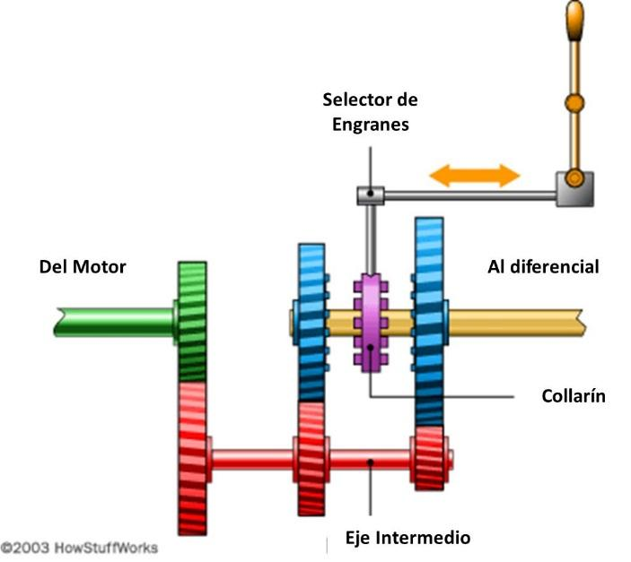
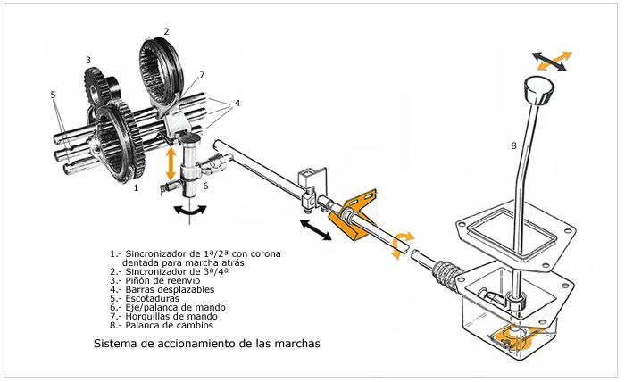

¿Qué es el sistema de transmisión?
El sistema de transmisión permite que llegue a las ruedas motrices la potencia y movimiento necesarios para funcionar.
El sistema de transmisión de un vehículo consiste en una serie de componentes encargados de conducir desde el cigüeñal la potencia suficiente para que las ruedas motrices giren.
¿Cómo funciona una transmisión manual?
Para entender la idea básica que hay detrás del funcionamiento de una transmisión manual, el siguiente diagrama simplifica una:

El eje y el engrane verde provienen del motor con el clutch como intermedio. Cuando presionas el pedal del clutch, desconectas este engrane del movimiento del motor, por lo que no se mueve el resto de la transmisión.
El conjunto rojo del eje intermedio, está conectado con el conjunto verde, por lo que recibe la potencia del motor.
El eje amarillo es el que está ligado directamente con la ruedas del auto y será el encargado de moverlas.
Los engranes azules están sobre baleros, por lo que siempre están girando sobre ellos, hasta que se conectan con el collarín.
El collarín, en morado, está conectado con el eje amarillo y es el encargado de que este se mueva cuando se conecta con los engañes azules. Una vez que la palanca lo posiciona sobre un engrane, ambos se “conectan” por medio de unos dientes que forman parte del mismo engrane. Mientras un engrane azul se encuentra enganchado con el collarín, el otro queda loco.
Es por ello que cuando no engranamos bien el clutch, los engranes no dejan de moverse por completo y truena, ya que los dientes golpean uno con otro.
Si el collarín no está engranado con ningún engrane azul, la transmisión se encontrará en neutral.
Palanca de velocidades
En la imagen siguiente puede verse el sistema de mando de la caja de cambios anterior. La palanca de cambios (8) transmite un movimiento en cruz de izquierda a derecha y hacia adelante o hacia atrás indistintamente, que es interpretado por el eje/palanca (6) transformando dicho movimiento en uno de giro en semicírculo y otro movimiento en forma vertical de arriba a abajo o al revés. El Eje/palanca con su movimiento acciona una de las barras desplazables (4) que tienen acopladas de forma solidaria las horquillas (7) que a su vez mueven los sincronizadores (1 y 2) y el piñón de reenvío (3). Las barras desplazables (4) están dotadas cada una de ellas de unas escotaduras (5), en las que puede alojarse una bola presionada por un muelle. Estas escotaduras sirven para fijar las barras en una posición concreta para impedir el desplazamiento de las mismas, como consecuencia de las vibraciones o sacudidas que se producen con la marcha del vehículo. Esto evita que se pueda salir una marcha una vez que esta engranada.

Mantenimiento de la transmisión
Como todo elemento con engranes que interactúan entre ellos, una transmisión manual de auto o de camión tiene un alto coeficiente de fricción, por lo que requiere que un antifriccionante, como una grasa para transmisión o algún líquido de transmisión que actúe como agente de deslizamiento.
El correcto uso del clutch es un elemento importante: debemos de disminuir el “frenado con motor” si no es necesario, y utilizar los frenos.
Las transmisiones normalmente vienen selladas, con un pequeño espacio para revisar el nivel de líquido de transmisión.